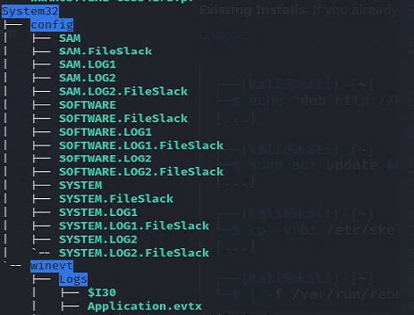
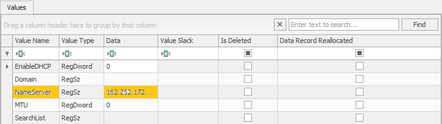

19 May 2024 / (write-up)
This was my first forensics CTF challenge that I managed to solve all on my own that wasn’t just packet tracing in Wireshark or one that didn’t involve the good old binwalk or exiftool use. Rather, I had a triaged Windows image file to investigate for DNS history records. Here is the scenario: “We recently obtained a triage image from a Windows laptop belonging to a suspected ransomware operator. The suspect used several anti-forensic techniques and managed to erase any form of web history. We suspect that we may be able to use data from DNS servers as evidence to tie the suspect to the operation. Unfortunately, the suspect was using a VPN. Can you find any DNS servers used during the VPN connection? The answer will be in the form of byuctf{ip.address} (there may be multiple answers, any valid IP address for the DNS server will work for the answer).”
The problem attachment was a zip file that contained the image file, after extracting the zip file, I ran the tree command in linux to get the idea of the files I will be dealing with, you can view some of the output here:

Looking at the problem statement, we know that we are looking for DNS records, which makes things easier for
us. Looking at the directory tree of the extracted files, we note the System32 directory, from which we can
infer a preceding Windows directory. We know that when we are not working with a live system, the registry
hive of interest (in this case, SYSTEM) is located in “C:\Windows\System32\Config\”, and in our current
System32 directory we open the config directory and there are three interesting hives here, SAM, SOFTWARE,
and our directory of interest, SYSTEM. Bingo!
Now open up Registry Explorer, locate and load your SYSTEM hive. Collapse the ROOT key, collapse the
ControlSet001 key, and collapse the Services key.
Remember we are looking for DNS records, so our go to from here is to scroll down to TCPIP. Collapse that, and here it seems like only the Parameters key has subkeys, so we collapse that, and collapse Interfaces.

Click on the first subkey and on the right hand side for values, we see NameServer that has what looks like an IP address in the data field. If we click on that, boom, we have the (2) IP addresses. Case closed.

We found what DNS servers were used by the perps during their VPN connections.
That’s it for now, see you soon, and stay secure!